This tutorial was created by StevenITea.
For any questions or help requests: Discord: stevenltea
Tutorial objective: learn how to publish a simple website from an
index.html file and a style.css file, without going into advanced development concepts.
The goal is to focus on the basics: create the project, link it to GitHub, send the files, then enable GitHub Pages.
Depending on the type of project, other solutions exist, such as MkDocs for technical documentation, Jekyll for GitHub Pages-compatible static sites, Hugo for fast websites, or WordPress for dynamic websites. Here, we deliberately choose a simple HTML/CSS approach to clearly understand the deployment process.
Before getting started, you need two things:
On Windows, it is recommended to launch Visual Studio Code as an administrator during the initial setup, to avoid certain permission-related issues.
Sign in to GitHub and create a new repository. It is recommended to choose a short name,
preferably in English, along with a clear description. You can also check the option
to add a README, but it is not required for this tutorial.
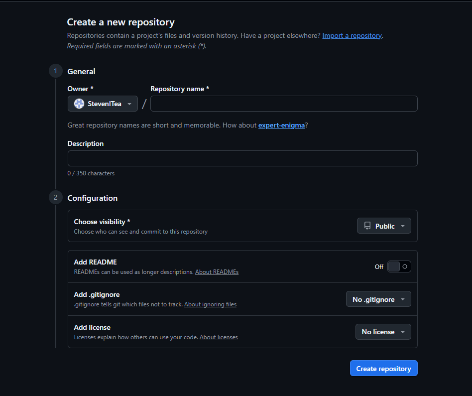
Create a folder wherever you want, for example ProjetGit. Then right-click that folder
and choose Open with Code to open it directly in Visual Studio Code.
In this project, the basic structure will look like this:
ProjetGit/
├── index.html
├── index-en.html
├── style.css
└── images/
The images folder will contain the screenshots or illustrations used on the site.
GitHub Pages needs an index.html file to display the website properly.
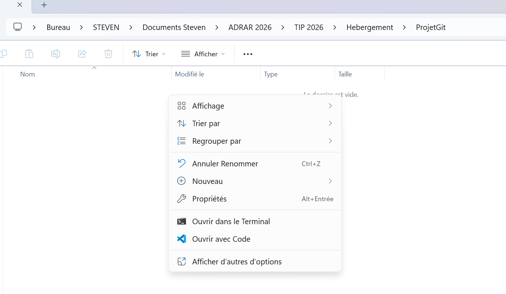
Once the folder is open in Visual Studio Code, open a terminal using Terminal → New Terminal. Then initialize Git in the project folder and configure your GitHub identity.
git init
git config user.name "your github username"
git config user.email "your github email address"
If you want to apply this configuration to all your future projects, you can use the
--global option.
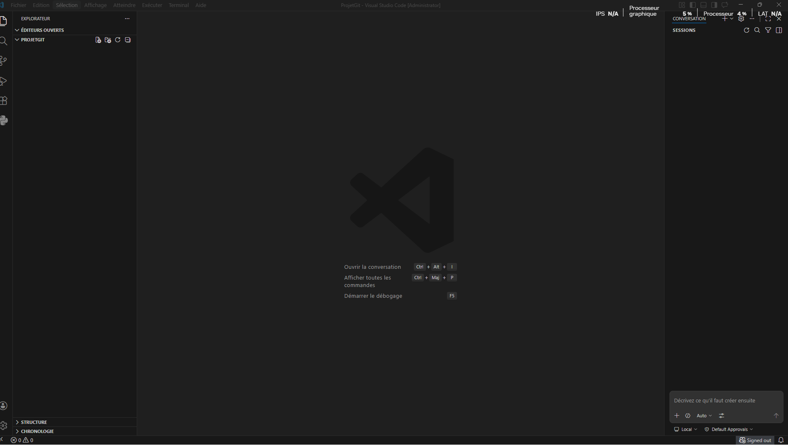
Go back to GitHub, open your repository, then click the Code button to copy the repository URL. If the repository is empty, this link appears directly on the page.
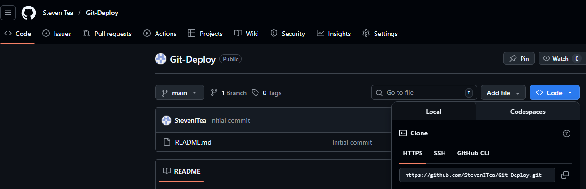
This URL will allow you to connect your local folder to your remote GitHub repository.
git remote add origin https://github.com/USER/REPOSITORY-NAME.gitThis command links the local project to the remote GitHub repository. If an old repository is already linked, you can remove it with:
git remote remove originThen run the previous command again with the correct URL. To check the currently linked repository, use:
git remote -vThe next step is to create the website content. For this example, we will only use:
index.html for the page structure;index-en.html for the English version;style.css for the design;images folder for illustrations.For this example, the website content was prepared from an existing tutorial, then reworked with the help of AI, in order to produce a simple, clear, and easy-to-understand structure for a first deployment.
Once your files are created, you need to add them to Git to prepare them for upload to GitHub.
git add .This command adds all project files, for example:
index.htmlindex-en.htmlstyle.cssNext, create a first commit to save this version of the project:
git commit -m "Add website"The commit message simply describes the changes you made. You can choose another message if needed.
GitHub usually uses the main branch as the default branch. So make sure the project is on it,
then send the content to GitHub.
git branch -M main
git push -u origin mainAt this point, your code is now on GitHub.
Once the files have been sent, the only thing left is to publish the site. On GitHub, go to:
Deploy from a branchmain/ (root)GitHub will then generate a publication URL in this format:
https://yourusername.github.io/repository-name/This is the address you will be able to share to access your website online.
Here is the logical continuation of the tutorial with the new screenshots added at the end of the document, in order of use.
They show the file creation, the upload to GitHub, the case where a README already exists online,
then the GitHub Pages activation.
Once your files are created, you should see your ProjetGit folder in Visual Studio Code with
index.html, style.css, and the images folder.
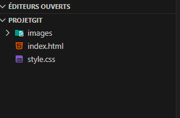
In the terminal, you can then run the following commands to initialize Git, add the files,
create the commit, and rename the branch to main.
git init
git add .
git commit -m "Add website"
git branch -M main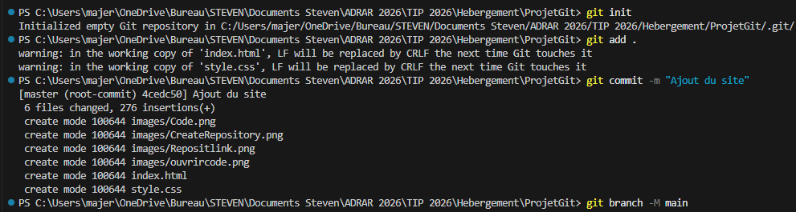
If you created a README directly on GitHub, your remote repository may already contain
a file that you do not yet have locally. In that case, a git pull may open a merge message.
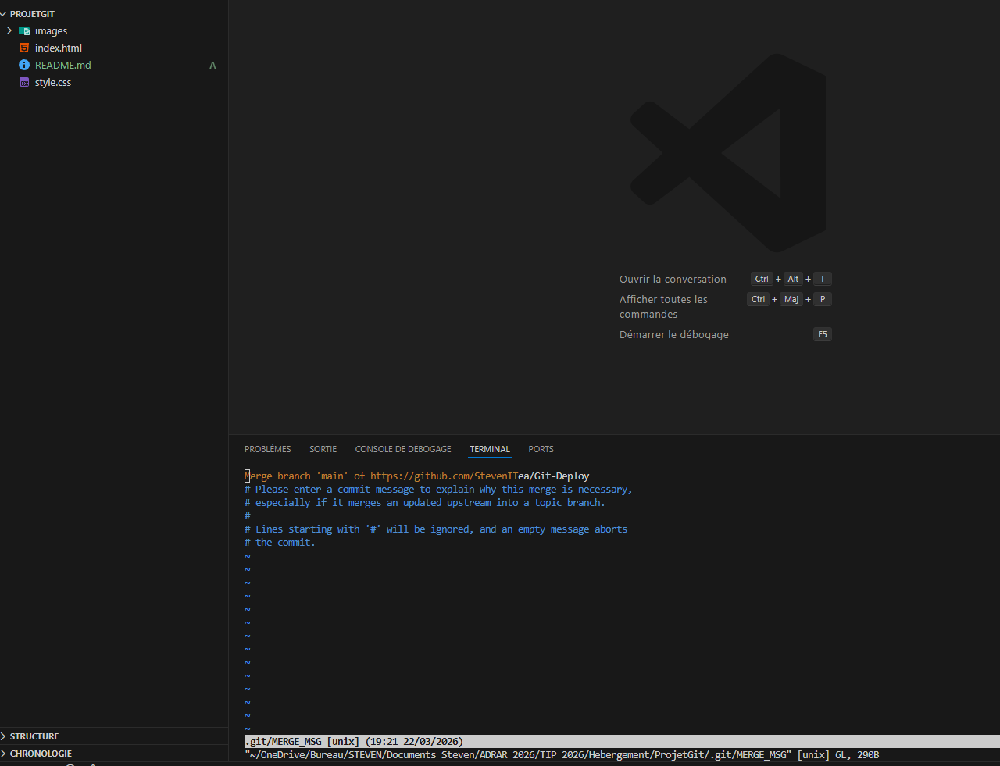
You will then need to validate the merge message to complete the operation, and then continue normally.
Once the repository is correctly linked, you can send the project with:
git push -u origin main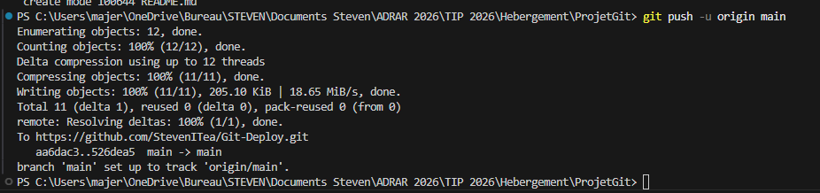
After uploading, you should find your files on GitHub: the images folder,
index.html, style.css, and possibly the README.
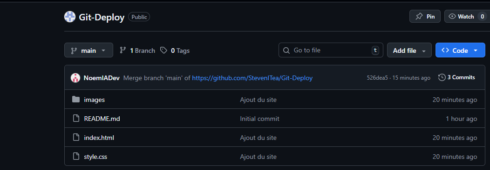
To publish the site, go to the Settings tab of your repository.
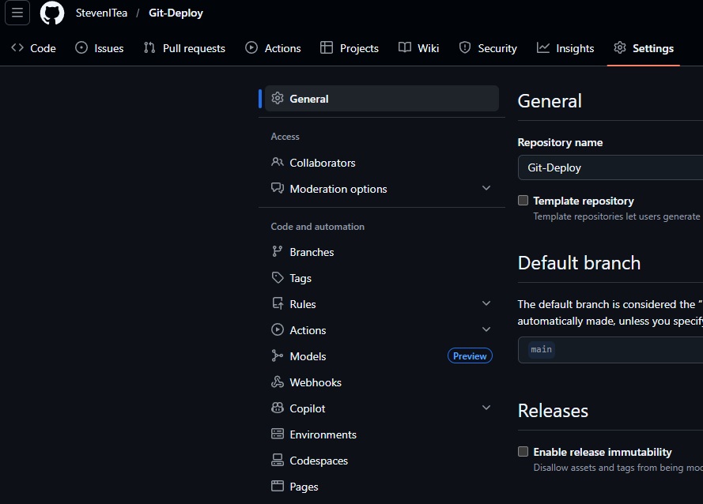
In the Pages section, choose Deploy from a branch. If GitHub Pages is still disabled,
you will first see that the branch is set to None.
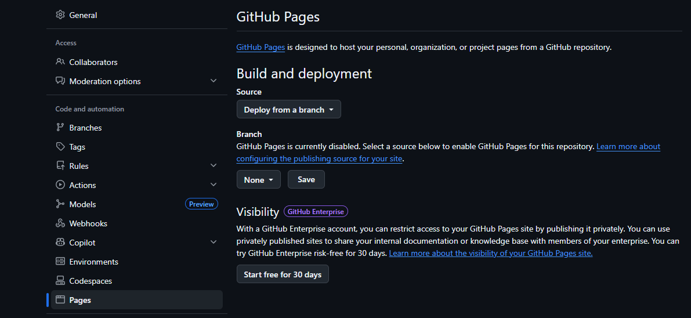
Then select the main branch and the / (root) folder, then click Save.
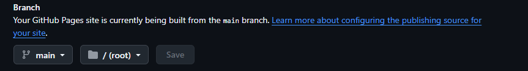
Once GitHub Pages is enabled, GitHub shows that the site is being built or is already deployed. You can also see the deployment from the repository main page.
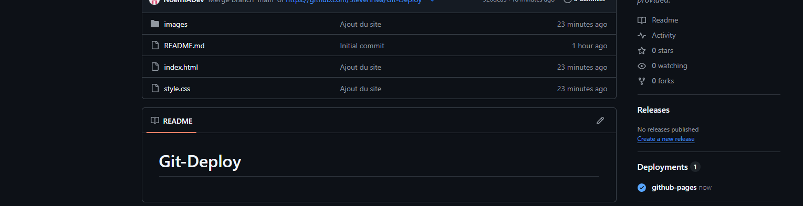
Once everything is complete, your site is accessible through the URL provided by GitHub Pages. Here is an example of the final result.
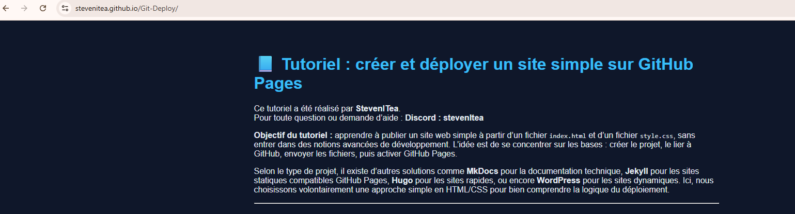
You now have a simple website hosted on GitHub Pages from an HTML/CSS project. This method is ideal for publishing a small showcase site, a tutorial, simple documentation, or a learning project.